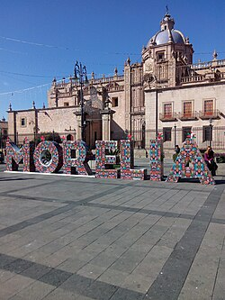

Morelia is a beautiful city in Michoacán, Mexico, known for its colonial architecture and rich cultural heritage. It is famous for its pink stone buildings, historic center, and vibrant festivals. The city offers a unique blend of history, art, and gastronomy, making it a favorite destination for travelers seeking an authentic Mexican experience.
I would like to go back to Morelia, Mexico because is the city where I was born and raised. It holds a special place in my heart, and I have many fond me mories of my childhood there. The city's charm, friendly people, and delicious food make it a place I would love to revisit and explore further.
